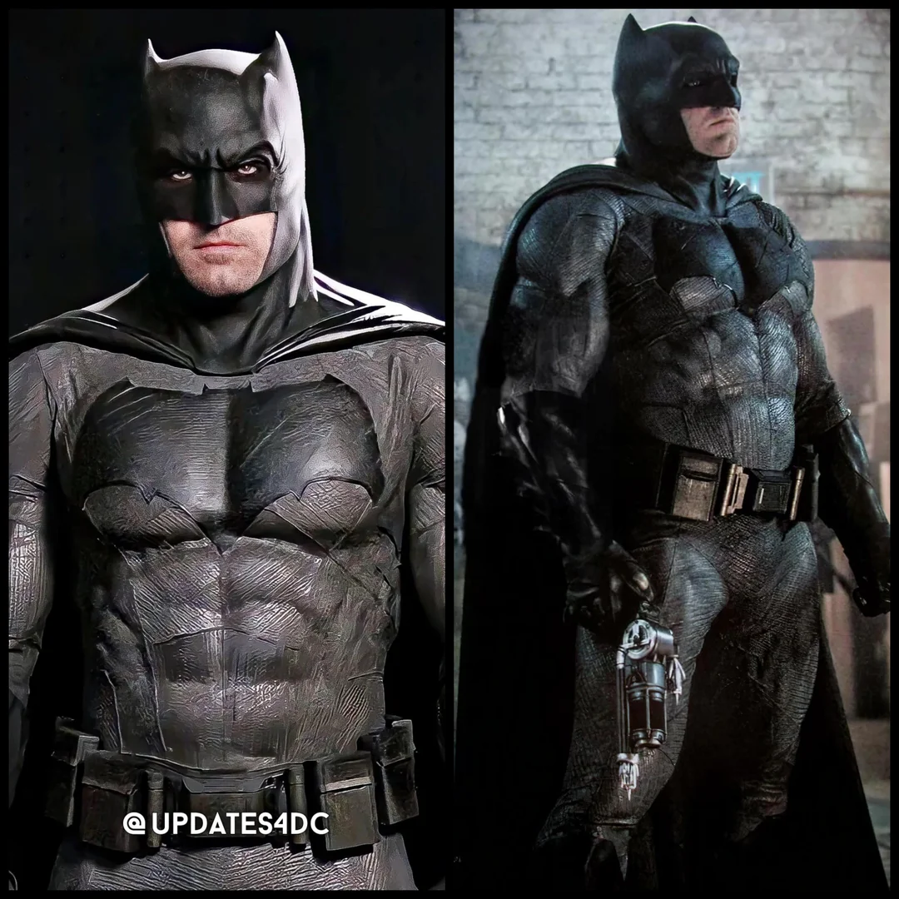

Dossiê Tático: O Morcego de Gotham (2016-2023)
Atuação de Referência: Ben Affleck

Perfil Psicológico Operacional e Equipamentos
Um vigilante veterano, marcado por 20 anos de combate ao crime e perda de aliados. Extremamente robusto e letal em combate corpo a corpo.
Este Batman é o mais brutal e cínico. Operando em uma Gotham City contemporânea, ele é um vigilante altamente treinado, com habilidades de combate corpo a corpo e táticas de guerra urbana. Sua abordagem é direta e implacável, focando em eliminar ameaças de forma eficiente. Ele mantém uma postura estratégica, utilizando inteligência e planejamento para antecipar os movimentos de seus inimigos.
Item mais utilizado no cinto de utilidades: "Batarangue de Alta Velocidade"
> Ameaças Nível Metahumano (Universo Snyder - Ben Affleck)
- Superman (Clark Kent): Visto inicialmente pelo Batman como uma ameaça alienígena de extinção global ("Se houver 1% de chance, devemos tomar como certeza absoluta").
- Lex Luthor: Bilionário manipulador que orquestrou o conflito ideológico e físico entre os heróis.
- Lobo da Estepe: Conquistador alienígena em busca das Caixas Maternas.
Protocolo de Contenção Atualizado: Apreensão Pacífica Marcação a ferro quente (Marcador de Morcego).
A marcação a ferro quente com o símbolo do morcego do Batman é uma referência direta a uma das facetas mais sombrias e polêmicas do herói nos cinemas, introduzida no filme Batman vs Superman: A Origem da Justiça (2016). Na trama, essa versão do Batman (vivido por Ben Affleck), marcada pelo cansaço e pela perda de seus valores tradicionais, passa a usar um ferrete metálico aquecido para marcar a pele de criminosos capturados com o seu logotipo. No submundo de Gotham City, os criminosos que recebiam a "Marca do Morcego" eram sentenciados à morte por outros detentos na prisão, tornando o ato uma espécie de condenação definitiva.
Nível de Fadiga e Cinismo: